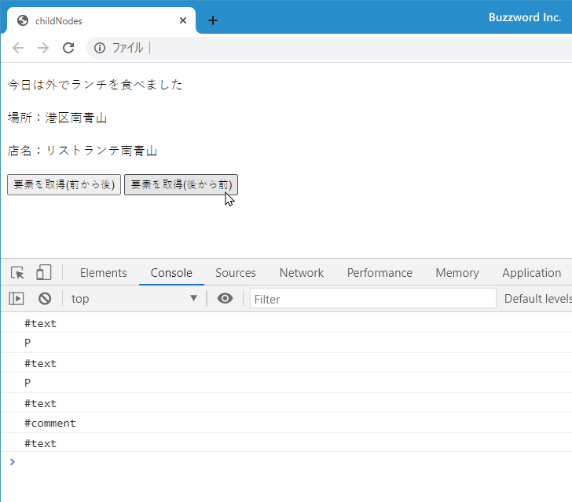
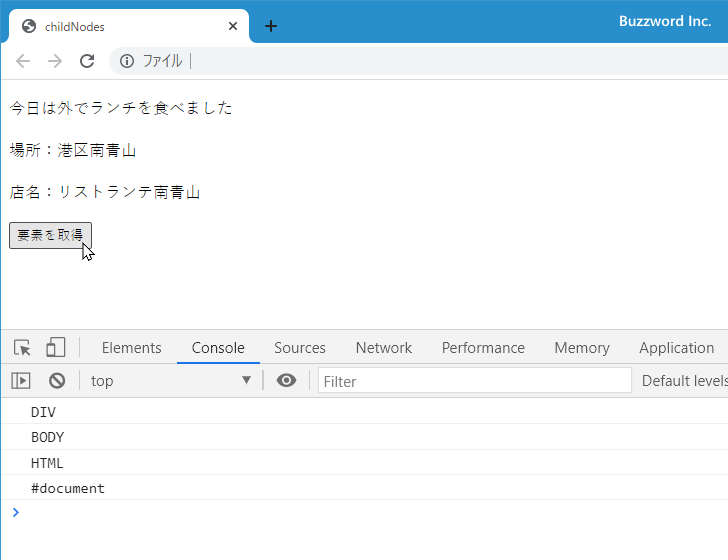

- Home ›
- JavaScript入門 ›
- DOM入門
ノードの子・親・兄弟ノードを取得
HTML ページに含まれるノードは階層構造になっており、その中の特定のノードに対して一つ上の階層にある親ノードや一つ下の階層にある子ノード、そして同じ階層にある兄弟ノードがありますが、これらのノードは Node オブジェクトで用意されている各種プロパティを参照することで取得することができます。ここでは Node オブジェクトのプロパティを利用して特定のノードから見た子ノード、親ノード、兄弟ノードを取得する方法について解説します。
※ 要素ノードに限定して子や孫要素のノードを取得する方法については「要素ノードの子・親・兄弟要素のノードを取得(ParentNode.children他)」を参照されてください。
すべての子ノードを取得する
Document オブジェクトの getElementById メソッドや querySelector メソッドなどを使って要素ノードを取得したあと、 Node オブジェクトの childNodes プロパティを参照することで、このノードの 1 つ下の階層にある子ノードをすべて取得することができます。書式は次の通りです。
node.childNodes
このプロパティは参照専用です。戻り値として NodeList オブジェクトを返します。
NodeList オブジェクトは複数のノードの集合です。 NodeList オブジェクトでは length プロパティと item メソッドが用意されており、次のように取得したノードの数を取得したり、取得したノードを取り出すことができます。
let element = document.getElementById('main');
let children = element.childNodes;
// 取得したノードの数を取得
let len = children.length;
// インデックスを指定して Node オブジェクトを取得
let element = children.item(0);
// 次の形式でもインデックスを指定して Node オブジェクトを取得
let element = children[0];
子ノードが複数あった場合、 HTML ページの中で記述された順番にインデックスが割り当てられています。インデックスは最初が 0 で 1, 2, 3... と続いていきます。子ノードが見つからなかった場合、 childNodes プロパティは length が 0 の NodeList オブジェクトを返します。
次のサンプルを見てください。
<!DOCTYPE html>
<html lang="ja">
<head>
<meta charset="UTF-8">
<title>childNodes</title>
</head>
<body>
<p>今日は外でランチを食べました</p>
<div id="box">
<p>場所：港区南青山</p>
<p>店名：リストランテ南青山</p>
</div>
<button onClick="getElements();">要素を取得</button>
<script>
function getElements(){
let element = document.getElementById('box');
let children = element.childNodes;
let len = children.length;
console.log("ノード数:" + len);
for (let i = 0; i < len; i++){
console.log(children.item(i).nodeName);
}
}
</script>
</body>
</html>
表示されたボタンをクリックすると、 id 属性の値が box のノードを取得し、そのノードの子ノードをすべて取得します。そのあとで子ノードの数と、ノード毎にノードの名前を出力しています。
id 属性の値が box の div 要素には p 要素が 2 つ含まれているだけですが、「空白ノード」で解説したようにノードとして取得する場合は HTML 文の記述の仕方によっては空白ノードが含まれます。今回も p 要素の前後に空白ノードが含まれるため子ノードは全部で 5 つになっています。
最初の子ノードと最後の子ノードを取得する
Node オブジェクトの firstChild プロパティを参照することで、このノードの 1 つ下の階層にある子ノードの中の最初のノードを取得することができます。書式は次の通りです。
node.firstChild
このプロパティは参照専用です。戻り値として Node オブジェクトを返します。子ノードがなかった場合は null が返ります。
Node オブジェクトの lastChild プロパティを参照することで、このノードの 1 つ下の階層にある子ノードの中の最後のノードを取得することができます。書式は次の通りです。
node.lastChild
このプロパティは参照専用です。戻り値として Node オブジェクトを返します。子ノードがなかった場合は null が返ります。
例えば特定のノードの子ノードの中で最初と最後の子ノードを取得するには次のように記述します。
let element = document.getElementById('main');
let first = element.firstChild;
let last = element.lastChild;
同じ階層の次のノードと前のノードを取得する
Node オブジェクトの nextSibling プロパティを参照することで、このノードと同じ階層にある次のノードを取得することができます。書式は次の通りです。
node.nextSibling
このプロパティは参照専用です。戻り値として Node オブジェクトを返します。子ノードがなかった場合は null が返ります。
Node オブジェクトの previousSibling プロパティを参照することで、このノードと同じ階層にある一つ前のノードを取得することができます。書式は次の通りです。
node.previousSibling
このプロパティは参照専用です。戻り値として Node オブジェクトを返します。子ノードがなかった場合は null が返ります。
例えば特定のノードの同じ階層にある次のノードと一つ前のノードを取得するには次のように記述します。
let element = document.getElementById('main');
let next = element.nextSibling;
let prev = element.previousSibling;
次のサンプルを見てください。
<!DOCTYPE html>
<html lang="ja">
<head>
<meta charset="UTF-8">
<title>nextSibling,previousSibling</title>
</head>
<body>
<p>今日は外でランチを食べました</p>
<div id="box">
<!-- お店の情報 -->
<p>場所：港区南青山</p>
<p>店名：リストランテ南青山</p>
</div>
<button onClick="getElements(1);">要素を取得(前から後)</button>
<button onClick="getElements(2);">要素を取得(後から前)</button>
<script>
function getElements(direct){
let element = document.getElementById('box');
if (direct == 1){
let child = element.firstChild;
while (child){
console.log(child.nodeName);
child = child.nextSibling;
}
}else{
let child = element.lastChild;
while (child){
console.log(child.nodeName);
child = child.previousSibling;
}
}
}
</script>
</body>
</html>
表示されたボタンをクリックすると、 id 属性の値が box の要素ノードを取得したあと、要素ノードの最初の子ノードを取得します。そして同じ階層のノードを前から後ろに向かって順に取得していきます。取得したノードはノードの名前を出力しています。
また表示されたボタン(後から前)をクリックすると、 id 属性の値が box の要素ノードを取得したあと、要素ノードの最後の子ノードを取得します。そして同じ階層のノードを後ろから前に向かって順に取得していきます。取得したノードはノードの名前を出力しています。

親ノードを取得する
Node オブジェクトの parentNode プロパティを参照することで、このノードの親ノードを取得することができます。書式は次の通りです。
node.parentNode
このプロパティは参照専用です。戻り値として Node オブジェクトを返します。 Document ノードの親ノードを取得した場合は null が返ります。
例えば特定のノードの親ノードを取得するには次のように記述します。
let element = document.getElementById('main');
let parent = element.parentNode;
次のサンプルを見てください。
<!DOCTYPE html>
<html lang="ja">
<head>
<meta charset="UTF-8">
<title>parentNode</title>
</head>
<body>
<p>今日は外でランチを食べました</p>
<div>
<!-- お店の情報 -->
<p>場所：港区南青山</p>
<p id="shop">店名：リストランテ南青山</p>
</div>
<button onClick="getElements();">要素を取得</button>
<script>
function getElements(direct){
let element = document.getElementById('shop');
let parent = element.parentNode;
while (parent){
console.log(parent.nodeName);
parent = parent.parentNode;
}
}
</script>
</body>
</html>
表示されたボタンをクリックすると、 id 属性の値が shop の要素ノードを取得したあと、順に親ノードを取得していきます。取得したノードはノードの名前を出力しています。

-- --
Node オブジェクトのプロパティを利用して特定のノードから見た子ノード、親ノード、兄弟ノードを取得する方法について解説しました。
( Written by Tatsuo Ikura )

著者 / TATSUO IKURA
初心者～中級者の方を対象としたプログラミング方法や開発環境の構築の解説を行うサイトの運営を行っています。